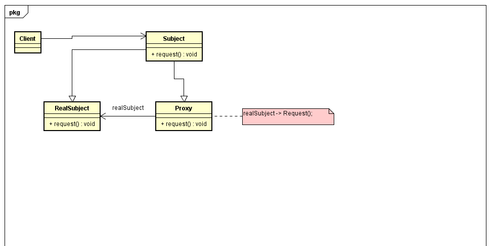

Proxy
Descrição do padrão:
O padrão Proxy controla e gerencia o acesso a objetos que ele representa. Uma razão desse tal controle, é adiar o custo integral da criação e da inicialização do objeto até o momento em que realmente necessitamos usá-lo. O Proxy ira criar o objeto real somento quando for realmente nescessário a sua utilização, o proxy repassa as solicitações subsequentes diretamente para o objeto real. Portanto, ele deve manter uma referência para o objeto apos a sua criação. Basicamente, usando o padrão proxy, os objetos são criados sob demanda.
UML do padrão:
Descrição do exemplo do livro:
Nesse exemplo, usamos o ambiente de uma empresa e sua lista de funcionários para implementar o pattern Proxy. Pelo motivo de uma empresa poder ter milhares de funcionários no seu quadro, poderia ser muito custoso carregar o objeto empresa com todos os seus funcionários de uma só vez, assim economizamos memória e deixamos a aplicação mais veloz. Criamos uma instancia da classe company com uma referência a uma lista de funcionários proxy(classe contact_list_proxy), mas não existe uma referência a um objeto lista de funcionários real ainda, portanto não existe nenhuma lista carregada na memória. Em seguida, pedimos a lista de funcionários para o objeto company, onde tem a refenrência da classe proxy, assim utilizando o método get_employee_list(), o proxy cria um objeto lista de funcionários real, desta forma podemos ter acesso aos funcionários cadastrados no sistema da empresa.